New Bark
Noon

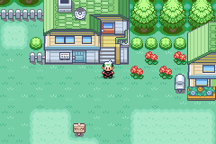
Dusk
Night
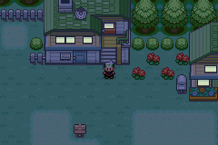
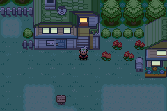
Dawn
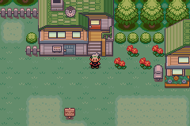
Six small glass panes become amber at night. Daytime and the four neighboring maps remain pixel-identical. Only three colors change; the pink trees, buildings and terrain retain their existing lighting.
Download game + prepared save · Verification results · 5-minute playtest route
The existing engine already gives protected glass a pale cream light at night. This change warms it further with the approved amber palette. The surrounding windows that use other palettes are outside this six-pane pilot.
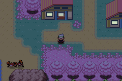
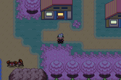
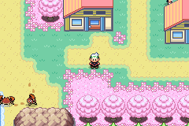
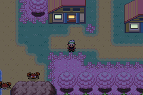
These time-lapses set the clock between samples. The natural-clock clips below separately verify both boundaries while standing still.
Noon 12:00 · dusk midpoint 20:00 · full night 22:00 · dawn midpoint 08:00. Images are native 240×160, displayed at 2× with nearest-neighbor scaling.





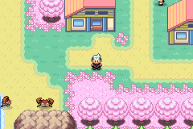
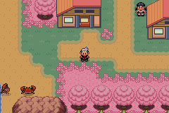
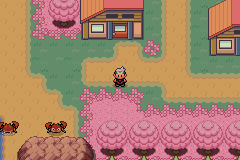

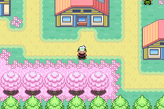
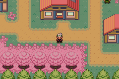
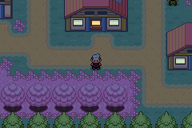


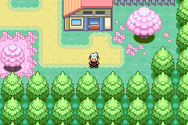


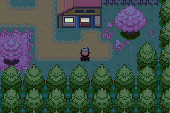
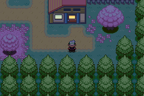
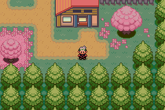
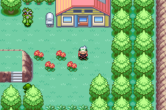

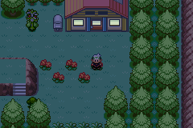
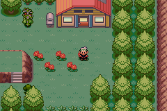
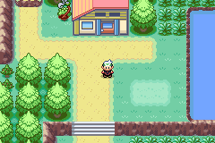


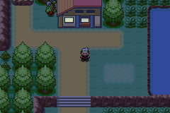

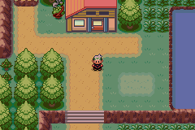

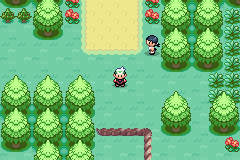


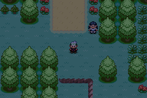
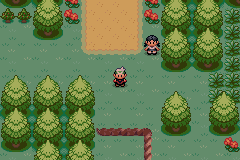

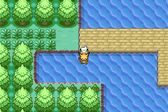

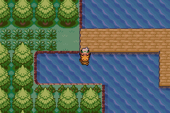

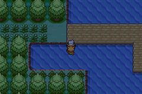


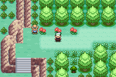

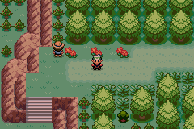

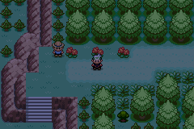


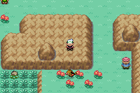

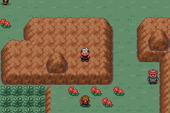

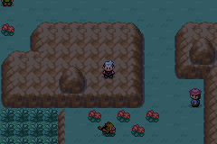

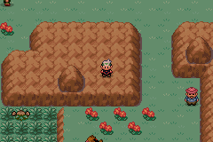
Source tiles before runtime lighting. The unused rock metatile keeps its colors.
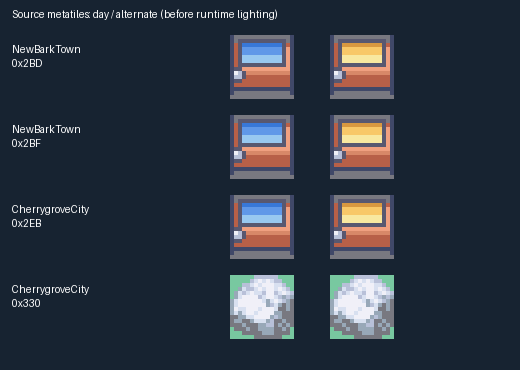
Natural clock clips cover 200 emulated seconds at 50× playback. Other return clips play at normal speed.
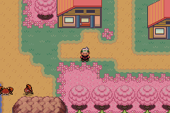
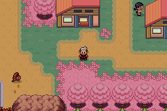
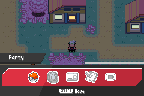
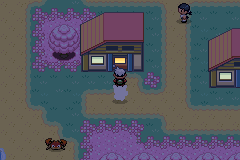
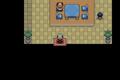
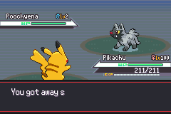
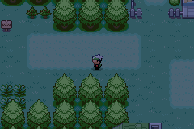
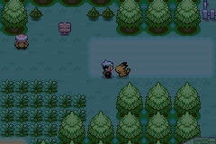
Before source: 13478c088b0dcb2a28c3c453ed6eac0e8040364b
After source: 3bc343d0331064646d4ce99b4b691291e1a6bf0c. 530 focused assertions pass. The download is the unmodified, tested development build required by RELEASING.md; fixture hooks are only in disposable capture ROMs.